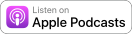

Usage¶
Structure¶
The best way to understand the app is to simply browse the online demo or locally after adding a show and a few episodes in the admin. But for reference, assuming you chose podcast as the base of your URL conf, the structure is:
| URL | URL name | View | Model | Template | Context | Absolute URLs |
|---|---|---|---|---|---|---|
/podcast/ |
podcast:show_detail |
podcast.views.ShowDetailView |
Show |
podcast/show_detail.html |
show, episode_list |
{{ show.get_absolute_url }} |
/podcast/feed/ |
podcast:show_feed |
podcast.views.ShowFeed |
Show |
{{ show.get_absolute_feed_url }} |
||
/podcast/<episode-slug>/ |
podcast:episode_detail |
podcast.views.EpisodeDetailView |
Episode |
podcast/episode_detail.html |
episode |
{{ episode.get_absolute_url }} |
And if you chose podcasts and set PODCAST_SINGULAR = False to display multiple shows:
| URL | URL name | View | Model | Template | Context | Absolute URLs |
|---|---|---|---|---|---|---|
/podcasts/ |
podcast:show_list |
podcast.views.ShowListView |
Show |
podcast/show_list.html |
show_list |
|
/podcasts/<show-slug>/ |
podcast:show_detail |
podcast.views.ShowDetailView |
Show |
podcast/show_detail.html |
show, episode_list |
{{ show.get_absolute_url }} |
/podcasts/<show-slug>/feed/ |
podcast:show_feed |
podcast.views.ShowFeed |
Show |
{{ show.get_absolute_feed_url }} |
||
/podcasts/<show-slug>/<episode-slug>/ |
podcast:episode_detail |
podcast.views.EpisodeDetailView |
Episode |
podcast/episode_detail.html |
episode |
{{ episode.get_absolute_url }} |
Enclosures¶
The show feed is a subclass of Django’s Rss201rev2Feed feed generator class, which prohibits the use of more than one enclosure. Although Django’s syndication documentation doesn’t directly state it, the use of multiple enclosures are meant for only subclasses of Django’s Atom1Feed feed generator class.
The RSS Advisory Board states:
Support for the enclosure element in RSS software varies significantly because of disagreement over whether the specification permits more than one enclosure per item. Although the author intended to permit no more than one enclosure in each item, this limit is not explicit in the specification.
For best support in the widest number of aggregators, an item should not contain more than one enclosure.
Therefore, enclosures are modeled as OneToOneField s off of episodes, limiting episodes to one and only one enclosure.
Apple Podcasts does not host enclosure files; it is the responsibility of the developer to host them. Because an enclosure’s file is a FileField, files are uploaded to your MEDIA_ROOT setting. If you haven’t already, your urls.py should include patterns for interfacing with files in local development.
from django.conf import settings
from django.conf.urls import url, include
from django.conf.urls.static import static
from django.contrib.staticfiles.urls import staticfiles_urlpatterns
urlpatterns = [
# ...
url(r'^podcast/', include('podcast.urls')),
]
# Static/Media assets for local development
if getattr(settings, 'DEBUG', False):
urlpatterns += staticfiles_urlpatterns() + static(settings.MEDIA_URL, document_root=settings.MEDIA_ROOT)
Although file management in production is out of scope of this documentation, consider using Amazon Web Service’s S3 (Simple Storage Service) to host files and Django Storages and Boto (and, if using Python 3, Boto 3), to interface with them.
The code repository of the online demo is worth looking at for a complete implementation, especially the settings file if you expect to use AWS’s S3.
Protocols¶
Depending on the operating system and/or web browser, it’s possible to immediately subscribe a user to a podcast in iTunes or the iOS Podcasts app by using itpc:// or feed:// protcol-based URLs rather than the standard http:// or https://.
The app comes with the {% show_url %} template tag to help create these URLs.
{% load podcast_tags %}
{% show_url protocol='itpc' url=show.get_absolute_feed_url %}">
Result:
itpc://127.0.0.1:8000/podcast/feed/
Beware that these URLs are purely interaction based; you would not be required to submit the show feed to Apple Podcasts, but you would also not be able to track users’ behavior in Podcasts Connect. For this reason, you’re probably better off in a traditional submission to Apple Podcasts, saving your new URL in the Show model, and using the show.apple variable in your template.
{{ show.apple }}
Submission¶
The show feed URL is:
/podcast/feed/
If you have multiple shows, each respective show feed URL is:
/podcasts/<show-slug>/feed/
Submit the show feed to Podcasts Connect.
Badges¶
After Apple Podcasts approves your podcast, feel free to use the “Listen on Apple Podcasts” badge or icon, the U.S. versions of which are included as minified static files. You can also download them from the Apple Podcasts Identity Guidelines. The SVGs were minified with SVGO.
Badge¶
{% load i18n staticfiles %}
<img src="{% static 'podcast/img/badge.svg' %}" alt="{% trans 'Listen on Apple Podcasts' %}">
Icon¶
{% load i18n staticfiles %}
<img src="{% static 'podcast/img/icon.svg' %}" alt="{% trans 'Listen on Apple Podcasts' %}">